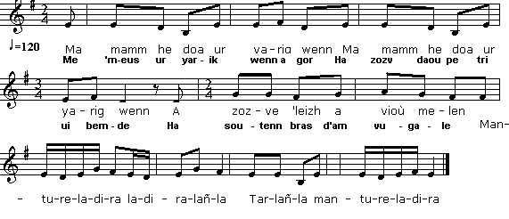

1° Ar Gwiskement - Ar Gwiskamant - Ar yarik wenn
Le vêtement - La poule blanche
Garments - The white Hen
Chant collecté par Théodore Hersart de La Villemarqué
dans le 1er Carnet de Keransquer (p. 286).

Mélodie
Arrangt Christian Souchon (c) 2015
|
A propos de la mélodie Commune aux deux chants ci-après: Cf. Chupenn glas. A propos du texte 1° Cf. Chupenn glas. 2° La chanson de Paotr Tréouré est tirée de "Kanaouennoù evit ar skoliou", chansons pour les écoles, choisies par A. ar Merser ; publié par Ar Skol Vrezhoneg, 10 rue de Quimper, 29200 Brest. Labbé Augustin Conq, né le 16 octobre 1874 à Tréouré et mort le 26 décembre 1952, prêtre et poète français d'expression bretonne, connu sous les pseudonymes de An aotrou Konk et Paotr Treoure. Il fit ses études au collège de Lesneven, et fut ordonné en 1898. Après avoir été vicaire à Saint-Pol-de-Léon, puis curé à Locquénolé, il fut nommé curé de Plounéour-Trez en 1930. Il a publié un "Barzaz ha Sonioù" (Presse Libérale, Brest 1935) qui contient poèmes et chansons. Célèbre pour ses fables, il en a adapté plusieurs de La Fontaine, ainsi "Al Louarn besk" (« Le renard à la queue coupée »). Il est très probable que le chant "La poule blanche" soit l'adaptation pour les enfants du chant que La Villemarqué fut sans doute le premier à consigner par écrit. Parmi les célèbres chansons en breton de Paotr Tréouré: |
About the tune The songs below have this tune in common: SeeChupenn glas. About the lyrics 1° See Chupenn glas. 2° The song composed by Paotr Tréouré was included in "Kanaouennoù evit ar skoliou", a choice of school songs gathered by A. Le Mercier, published by "Ar Skol Vrezhoneg", 10 rue de Quimper, 29200 Brest. The Rev. Augustin Conq, who was born on 16th October 1874 at Tréouré, and died on 26th December 1952, was a French priest and poet writing in Breton, known under two nom-de-plumes: "An Aotroù Konk" and "Paotr Treoure. He studied at Lesneven college and was ordained in 1898. He was first curate in Saint-Pol-de-Leon, then vicar at Locquénolé, and last vicar at Plounéour-Trez in 1930. He published a "Barzaz ha Sonioù" (Presse Libérale, Brest 1935) which harbours Breton poems and songs. A well-known fable writer, he adapted several pieces of La Fontaine, among others "Al Laouarn besk", the curtailed Fox. It is highly probable that the song "The white hen" is the sanitized adaptation for children of the "son" which La Villemarqué, as the first collector, committed to writing. Some of famous Breton songs by Paotr Treoure are: |
|
BREZHONEK p. 286 1. Me 'm-eus ur yarik wenn a gor Ha zozv daou pe tri ui bemde Ha soutenn bras d'am vugale. Mantureladira ladiralañla Tarlañla mantureladira 2. Daou ejenik am-eus ivez (div w.) Ha va c'hazek zo inkane. 3. Ha rac'h em-eus me o gwerzhet (div w.) Da ober lez d'am mestrezed. STUMM ALL 1 bis. Me'm-boa ur yarik wenn, o ge, Ur yarik gwenn a gane ge, Pehini a zozve din-me. 2 bis. Ha ganin marc'hik du a oa (div w.) Ur marc'hig du ivez am-boa. 3 bis. Ha va c'hi oa ken drant ha me (div w.) Hag ouzhpenn oa un inkane. 4 bis. Ha me'm-eus gwerzhet kement-se, Rac'h, abalamour d'am mestrez Pehini ra poan din-me. KLT gant Christian Souchon. |
TRADUCTION FRANCAISE p. 286 1. Ma poule blanche couve et pond Deux ou trois oeufs par jour. C'est mon Grand soutien pour mes nourrissons. Mantureladira ladiralañla Tarlañla mantureladira 2. J'ai deux petits boeufs. Ma jument (bis) Est une haquenée, vraiment. 3. Et tout cela je l'ai bradé (bis) Pour avoir de quoi courtiser. VARIANTE 1 bis. La poule blanche que j'avais, Il fallait l'entendre chanter, Sitôt qu'un oeuf elle pondait. 2 bis. J'avais aussi ce cheval noir(bis) La fière allure! Il fallait voir! 3 bis. Un chien aussi dispos que moi,(bis) Une haquenée de surcroît. 4 bis. Et tout cela je l'ai vendu, Pour une fille qui n'a su Que me chagriner, tant et plus. Traduction: Christian Souchon (c) 2015 |
ENGLISH TRANSLATION p. 286 1. I have a white hen that will lay And sit on two-three eggs a day. Great thing to feed children, I say! Mantureladira ladiralañla Tarlañla mantureladira 2. Two little oxen, near my sty.(twice) My mare could with a palfrey vie. 3. And all that I have sold away,(twice) To all my sweethearts court to pay. VARIANT 1 bis. I used to have a snow white hen, A little white hen who sang when- Ever, for me, she laid an egg. 2 bis. A little black horse I had, too,(div w.) A black horse I had, same as you. 3 bis. I had a dog that was alert (div w.) And a palfrey, I reassert. 4 bis. But all that I have sold away, For a nasty girl, I daresay, Who often would my heart betray. Translated by Christian Souchon (c) 2015 |
2° Ar yarik wenn
La poule blanche
The white Hen
Chant composé par "Paotr Treoure" (alias Abbé Augustin Conq)
|
BREZHONEK 1. Ma mamm he doa ur yarig wenn Ma mamm he doa ur yarig wenn A zozve 'leizh a vioù melen Mantureladira ladiralañla Tarlañla mantureladira 2. Allas! allas! ul louarn kozh A sante c'hwezh ha deiz ha noz 3. 'Barzh ur bod-spern, dre gein an ti Alanig a guzhas e fri 4. Pa zeuas ar yar da c'hoari E taolas e bav rous outi 5. Ha yao d'ar c'hoad d'ober friko Gant an holl lern a-dro-war-dro ! |
TRADUCTION FRANCAISE 1. La poule blanche de maman La poule blanche de maman Pondait des oeufs jaunes, tout plein. Mantureladira ladiralañla Tarlañla mantureladira 2. Mais, hélas, un vilain goupil La reniflait le jour, la nuit. 3. Derrière chez nous dans une au- bépine, il cachait son museau. 4. Quand la poulette vient s'ébattre Il allonge sa rousse patte. 5. Il file au bois faire un festin Avec tous les renards voisins. Traduction: Christian Souchon (c) 2015 |
ENGLISH TRANSLATION 1. My mom had a little white hen My mom had a little white hen That would lay yellow eggs, back then. Mantureladira ladiralañla Tarlañla mantureladira 2. Alas! Alas! a naughty fox Day and night would sniff at her box. 3. In a hawthorn behind our house Alan the fox would hide his nose. 4. Once the hen happened to play there He stretched out his red paw. Unfair! 5. Off he ran to the nearby wood He shared with others the good food. Translated by Christian Souchon (c) 2015 |
Ar chupenn glas